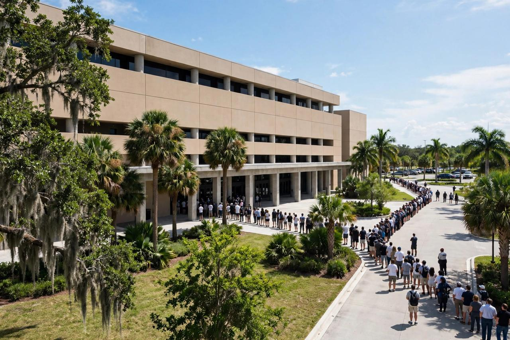

Trump Rallies in Fort Myers Today for Byron Donalds at FGCU
President Trump speaks at 2 p.m. at Alico Arena on the Florida Gulf Coast University campus, campaigning for Representative Byron Donalds in a Florida governor race that has tightened in the final weeks before the November 3 election.

Key points
- Updated 21:45 UTC, Oct. 23, 2026.
- Trump also said the United States might carry out another round of strikes on Iran, which he called another little Epic Fury, if Tehran did not agree to a deal, Reuters and the News-Press reported.
- President Donald Trump is in Fort Myers, Florida, on Friday for a midterm rally at Florida Gulf Coast University, where he is scheduled to speak at 2 p.m. in support of Representative Byron…
Update: Trump vows to deal with Cuba after Iran, repeats $5,000 dividend pledge in 90-minute Fort Myers speech
Updated 21:45 UTC, Oct. 23, 2026. President Donald Trump spoke for 90 minutes at Alico Arena in Fort Myers on Friday and used the rally to vow that the United States will deal with Cuba once the Iran war is settled, Reuters and the Associated Press reported. Answering a shouted question from the crowd about Cuba, Trump said American warships returning from Iran would pass Cuba and that one of them could stop about 50 yards off the coast while the Cubans raised their hands, and that he would then send Secretary of State Marco Rubio in to finish the deal, the News-Press reported in its live coverage. The Associated Press noted that Trump first floated the idea earlier this year and had not raised it in recent months.
Trump also said the United States might carry out another round of strikes on Iran, which he called another little Epic Fury, if Tehran did not agree to a deal, Reuters and the News-Press reported. He said he planned to spend $250 million to hire at least 5,000 new nurses in elder care facilities across the country, Reuters reported. Trump repeated his pledge of a $5,000 payment to every adult citizen, which he calls the Trump dividend, if Republicans win the House and the Senate on November 3, and said the money would have to be spent inside the United States, the News-Press reported. He first made that pledge in September. Trump called David Jolly, the Democrat running against Byron Donalds for governor, a vicious anti-gun radical, and said Donalds would always defend gun rights, the News-Press reported. After the speech, Trump left Southwest Florida International Airport and flew to Mar-a-Lago in Palm Beach, the News-Press reported.
President Donald Trump is in Fort Myers, Florida, on Friday for a midterm rally at Florida Gulf Coast University, where he is scheduled to speak at 2 p.m. in support of Representative Byron Donalds and other Republican candidates ahead of the November 3 election.
Trump departed Washington late on Friday morning on his way to the rally, the News-Press reported in its live coverage. The program at Alico Arena was set to begin at 12:30 p.m., with doors open from 10:30 a.m. The arena holds 4,633 people, including 300 standing room places. Tickets were limited to four per person through a Republican event page.
The race behind the visit
The rally is on Donalds' home turf. The Naples congressman is running to succeed Governor Ron DeSantis and faces Democrat David Jolly, a former representative. The race has tightened through the campaign season: a polling average cited by the News-Press from 270 To Win showed Donalds at 49.2 percent and Jolly at 44.2 percent as of October 23.
Trump endorsed Donalds nearly two years ago, in January 2025, writing on Truth Social that Donalds would be a truly great and powerful governor for Florida and urging him to run. Donalds has served in the House of Representatives since 2021.
Scheduled speakers at the rally included Republican National Committee Chair Joe Gruters, Senators Ashley Moody and Rick Scott, state Attorney General James Uthmeier, Agriculture Commissioner Wilton Simpson, Representative Greg Steube and congressional candidate Jim Schwartzel, according to the News-Press.
Travel and campus effects
The Federal Aviation Administration issued temporary flight restrictions around Southwest Florida International Airport, where Trump was expected to land on Air Force One, in effect from 12:15 p.m. to 5:15 p.m. Drivers were warned to expect temporary road closures near the airport and the campus from noon to 5 p.m. The campus is about six miles from the airport, off Ben Hill Griffin Parkway.
The visit divided the campus. In an email to students, faculty and staff on Monday, October 19, FGCU President Aysegul Timur said the rental agreement for the arena event had been finalized, and that the university routinely rents its facilities for private events. Local groups called a counterprotest for 1 p.m. along Ben Hill Griffin Parkway outside the campus. The rally was set to be streamed by Right Side Broadcasting from 12:30 p.m.
Early voting is under way across Florida. Voters decide the governor race and the rest of the midterm ballot on Tuesday, November 3.
Timeline
- Jan 2025Trump endorses Byron Donalds for governor of Florida on Truth Social, nearly two years before the election.
- Oct 19, 2026FGCU President Aysegul Timur confirms to the campus that the rental agreement for the Alico Arena rally has been finalized.
- Oct 23, 2026Trump speaks for 90 minutes at Alico Arena in Fort Myers, vowing to deal with Cuba after the Iran war is settled and repeating his $5,000 Trump dividend pledge, at a rally for Byron Donalds and other Republican candidates.
- Nov 3, 2026Election Day. Florida voters decide the governor race between Byron Donalds and David Jolly and the rest of the midterm ballot.
Sources
- The News-Press: Live updates, Trump is on his way to rally in Fort Myers
- Naples Daily News: President Trump's midterm rally visit to SW Florida, what to know
- The News-Press: President Trump to visit Florida today, where and how to get tickets
- Reuters: Trump says US will take care of Cuba on its way back from Iran
- Reuters: In Florida, Trump vows to deal with Cuba after Iran settled
- AP via SWOK News: Trump at South Florida rally revives the idea of military intervention in Cuba after Iran